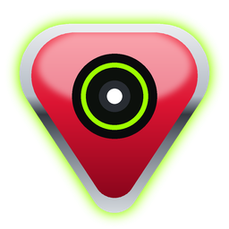
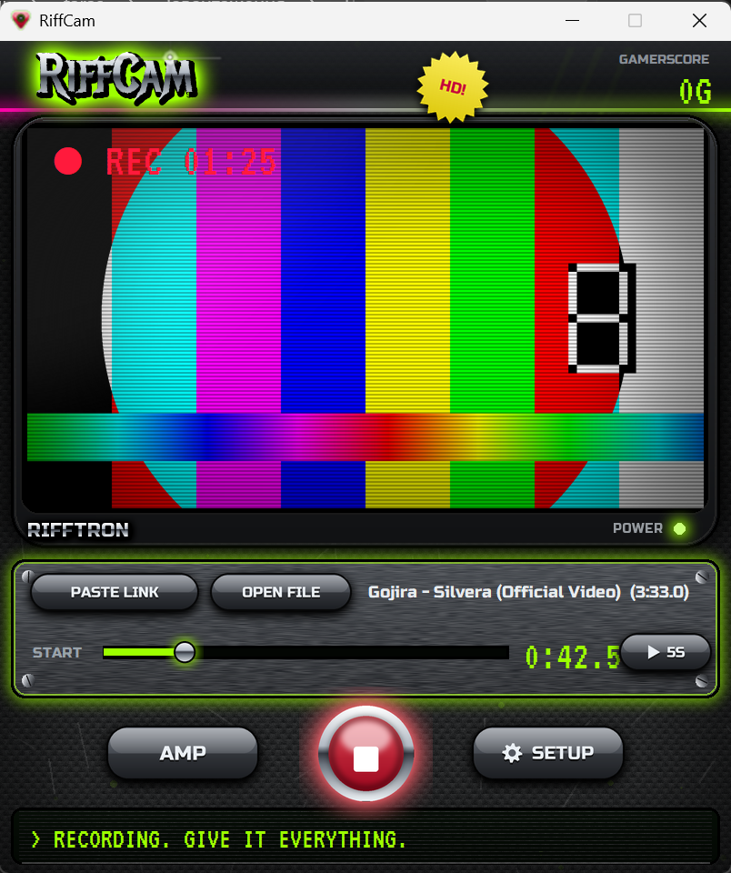
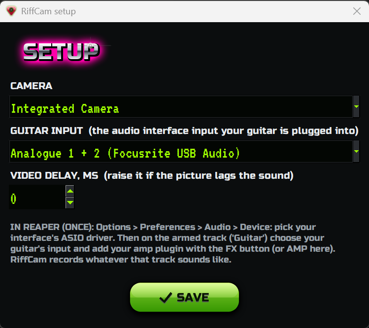
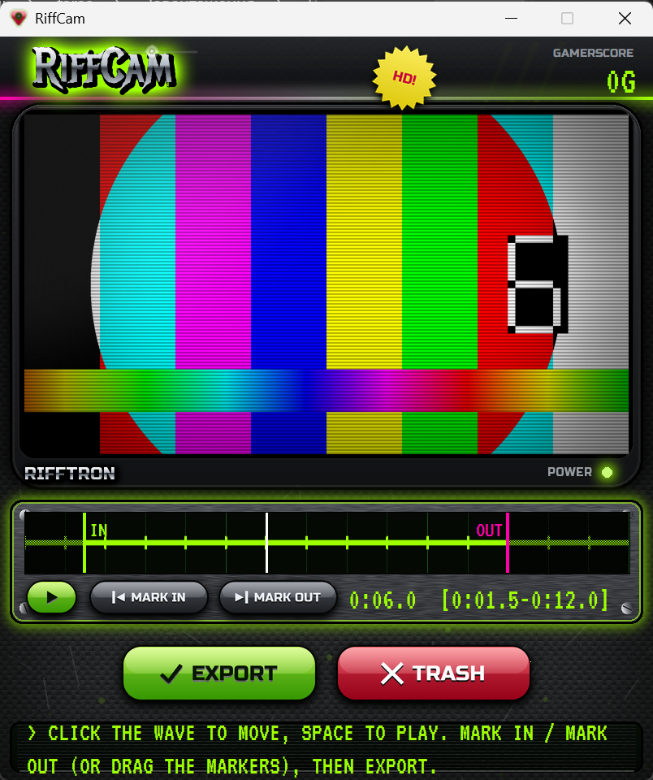

<title>RiffCam</title>
<meta name="claude:viewport-fit-sides" content="cover">
<link rel="preconnect" href="https://fonts.googleapis.com">
<link rel="preconnect" href="https://fonts.gstatic.com" crossorigin>
<link rel="stylesheet" href="https://fonts.googleapis.com/css2?family=Metal+Mania&family=Russo+One&family=VT323&family=Barlow:wght@400;500;600&display=swap">
<style>
/* Layout: the app window stretched into a page – carbon fibre, one column, bolted panels only where they mark one object.
   Single dark look on purpose: the app itself only exists in this skin. */
:root {
  --carbon: #121315;
  --panel: #2a2d33;
  --panel-lo: #1a1c20;
  --well: #060e06;
  --ink: #eceff3;
  --body: #c9cfd6;
  --dim: #8f97a1;
  --line: rgba(255,255,255,.09);
  --acid: #9dff00;
  --hot: #ff1a3c;
  --pink: #ff00aa;
  --gold: #ffd21a;
  --f-logo: "Metal Mania", "Impact", fantasy;
  --f-head: "Russo One", "Arial Black", system-ui, sans-serif;
  --f-body: "Barlow", system-ui, -apple-system, "Segoe UI", sans-serif;
  --f-lcd: "VT323", ui-monospace, "Consolas", monospace;
  color-scheme: dark;
}
* { box-sizing: border-box }
html { scroll-behavior: smooth }
@media (prefers-reduced-motion: reduce) { html { scroll-behavior: auto } *, *::before, *::after { animation: none !important; transition: none !important } }
body {
  margin: 0; color: var(--body); font: 400 18px/1.6 var(--f-body);
  background:
    repeating-linear-gradient(45deg, rgba(255,255,255,.03) 0 3px, transparent 3px 6px),
    repeating-linear-gradient(-45deg, rgba(0,0,0,.35) 0 3px, transparent 3px 6px),
    var(--carbon);
}
body::before { content: ""; position: fixed; inset: 0 0 auto; height: env(safe-area-inset-top, 0px); z-index: 10; background: #0b0c0d }
a { color: var(--acid) }
:focus-visible { outline: 3px solid var(--acid); outline-offset: 3px }
.wrap { max-width: 1040px; margin: 0 auto; padding-left: max(16px, env(safe-area-inset-left, 0px)); padding-right: max(16px, env(safe-area-inset-right, 0px)) }
h1, h2, h3 { margin: 0; text-wrap: balance; font-weight: 400; color: var(--ink) }
h2 { font: 400 clamp(26px, 4vw, 38px)/1.1 var(--f-head); text-transform: uppercase; letter-spacing: .02em }
h3 { font: 400 20px/1.25 var(--f-head); text-transform: uppercase; letter-spacing: .03em }
p { margin: 0 }
strong { color: var(--ink); font-weight: 600 }
.lcd { font-family: var(--f-lcd); color: var(--acid); text-shadow: 0 0 6px rgba(157,255,0,.55); letter-spacing: .03em }
.eyebrow { font: 400 13px/1 var(--f-head); letter-spacing: .18em; text-transform: uppercase; color: var(--dim) }
kbd { font: 400 18px/1 var(--f-lcd); color: var(--acid); background: #000; border: 1px solid #2c3a1a; border-radius: 4px; padding: 1px 6px }

.chrome {
  font-family: var(--f-logo); line-height: .9;
  background: linear-gradient(#fff 0%, #b2bac4 42%, #343840 50%, #6e7680 62%, #eceff4 100%);
  -webkit-background-clip: text; background-clip: text; color: transparent;
  -webkit-text-stroke: 1.5px #000;
  filter: drop-shadow(0 0 10px rgba(157,255,0,.75)) drop-shadow(0 0 2px #000);
}

/* top bar */
.top { position: sticky; top: env(safe-area-inset-top, 0px); z-index: 5; background: linear-gradient(#1d1f23, #0b0c0d); border-bottom: 3px solid; border-image: linear-gradient(90deg, var(--pink), #fff 50%, var(--acid)) 1 }
.top .wrap { display: flex; align-items: center; gap: 20px; padding-block: 10px }
.top .logo { display: flex; align-items: center; gap: 10px; text-decoration: none }
.top .logo img { width: 34px; height: 34px }
.top .logo span { font-size: 32px }
.top nav { display: flex; gap: 22px; margin-left: auto }
.top nav a { color: var(--dim); text-decoration: none; font: 400 13px/1 var(--f-head); letter-spacing: .12em; text-transform: uppercase }
.top nav a:hover { color: var(--ink) }
.top .btn { min-height: 40px; padding: 0 18px; font-size: 14px }
@media (max-width: 760px) { .top nav { display: none } .top .btn { margin-left: auto } }

/* glossy buttons, same recipe as skin.py KINDS */
.btn { display: inline-flex; align-items: center; justify-content: center; gap: 10px; min-height: 54px; padding: 0 28px; border-radius: 27px; border: 2px solid #000; font: 400 16px/1 var(--f-head); letter-spacing: .06em; text-transform: uppercase; text-decoration: none; cursor: pointer; position: relative; overflow: hidden; box-shadow: 0 4px 0 rgba(0,0,0,.6), inset 0 1px 0 rgba(255,255,255,.5) }
.btn::after { content: ""; position: absolute; inset: 2px 8px 50% 8px; border-radius: 20px 20px 40% 40%; background: linear-gradient(rgba(255,255,255,.55), rgba(255,255,255,.08)); pointer-events: none }
.btn:active { transform: translateY(2px); box-shadow: 0 2px 0 rgba(0,0,0,.6) }
.btn.acid { background: linear-gradient(#cdff5a, #349600); color: #081600; box-shadow: 0 0 22px rgba(157,255,0,.4), 0 4px 0 rgba(0,0,0,.6) }
.btn.metal { background: linear-gradient(#7a808a, #1a1c20); color: #ebf0f5 }

/* bolted metal panel: used for the few things that are one object */
.panel { position: relative; background: linear-gradient(var(--panel), var(--panel-lo)); border: 2px solid #000; border-radius: 12px; box-shadow: inset 0 0 0 1px rgba(255,255,255,.07), 0 10px 30px rgba(0,0,0,.5); padding: 30px }
.panel::before { content: ""; position: absolute; inset: 0; border-radius: 10px; pointer-events: none; background: repeating-linear-gradient(90deg, rgba(255,255,255,.022) 0 1px, transparent 1px 7px) }
.screws { position: absolute; inset: 9px; pointer-events: none;
  background:
    radial-gradient(circle at 6px 6px, #e6e8ec 0 1.5px, #787c82 3px, #2a2c30 5px, transparent 5.5px) top left / 12px 12px no-repeat,
    radial-gradient(circle at 6px 6px, #e6e8ec 0 1.5px, #787c82 3px, #2a2c30 5px, transparent 5.5px) top right / 12px 12px no-repeat,
    radial-gradient(circle at 6px 6px, #e6e8ec 0 1.5px, #787c82 3px, #2a2c30 5px, transparent 5.5px) bottom left / 12px 12px no-repeat,
    radial-gradient(circle at 6px 6px, #e6e8ec 0 1.5px, #787c82 3px, #2a2c30 5px, transparent 5.5px) bottom right / 12px 12px no-repeat }
.glow { border-color: #3a5a00; box-shadow: 0 0 0 1px var(--acid), 0 0 24px rgba(157,255,0,.22), inset 0 0 0 1px rgba(255,255,255,.07) }
.well { border: 2px solid #000; border-radius: 8px; box-shadow: inset 0 2px 8px #000, 0 1px 0 rgba(255,255,255,.16);
  background: repeating-linear-gradient(0deg, rgba(255,255,255,.03) 0 1px, transparent 1px 3px), linear-gradient(var(--well), #000) }

section { padding-block: 60px }
.sec-head { display: grid; gap: 10px; margin-bottom: 30px; max-width: 680px }

/* hero */
.hero { padding-block: 52px 44px }
.hero .wrap { display: grid; grid-template-columns: 1.15fr .85fr; gap: 48px; align-items: center }
.hero-text { min-width: 0 }
.hero h1 .chrome { display: block; font-size: clamp(72px, 11vw, 136px) }
.hero .tag { display: block; font: 400 clamp(22px, 3vw, 32px)/1.15 var(--f-head); color: var(--acid); text-shadow: 0 0 14px rgba(157,255,0,.5), 2px 2px 0 #000; text-transform: uppercase; margin-top: 12px }
.hero .lead { margin-top: 18px; max-width: 32em; font-size: 20px }
.hero .cta { display: flex; flex-wrap: wrap; gap: 14px; margin-top: 28px }
.hero .status { margin-top: 22px; padding: 10px 14px; font-size: 22px }
.blink { animation: blink 1s steps(1) infinite }
@keyframes blink { 50% { opacity: 0 } }
.shot { position: relative; min-width: 0 }
.shot img { display: block; width: 100%; height: auto; border-radius: 10px; border: 2px solid #000; box-shadow: 0 0 0 1px rgba(157,255,0,.5), 0 0 40px rgba(157,255,0,.16), 0 30px 60px rgba(0,0,0,.7) }
.burst { position: absolute; top: -28px; right: -16px; width: 104px; aspect-ratio: 1; display: grid; place-items: center; font: 400 21px/1 var(--f-head); color: var(--hot); transform: rotate(-12deg);
  background: radial-gradient(circle at 40% 35%, #fff6a8, var(--gold) 55%, #d9a800);
  clip-path: polygon(50% 0,59% 14%,75% 7%,77% 24%,93% 25%,86% 41%,100% 50%,86% 59%,93% 75%,77% 76%,75% 93%,59% 86%,50% 100%,41% 86%,25% 93%,23% 76%,7% 75%,14% 59%,0 50%,14% 41%,7% 25%,23% 24%,25% 7%,41% 14%);
  filter: drop-shadow(0 4px 0 #000) }
@media (max-width: 860px) { .hero .wrap { grid-template-columns: 1fr } .shot { max-width: 420px; width: 100%; margin: 0 auto } .burst { right: -4px } }

/* steps: a real sequence, so they're numbered */
.steps { display: grid; gap: 22px }
.step { display: grid; grid-template-columns: 64px minmax(0, 1fr) 210px; gap: 26px; align-items: center; padding: 26px }
.step .num { font: 400 56px/1 var(--f-lcd); color: var(--acid); text-shadow: 0 0 8px rgba(157,255,0,.5) }
.step .txt { display: grid; gap: 10px; min-width: 0 }
.step img { width: 100%; height: auto; border-radius: 8px; border: 2px solid #000 }
@media (max-width: 760px) { .step { grid-template-columns: 1fr; gap: 14px } .step img { max-width: 320px } }

/* why it lines up */
.compare { display: grid; gap: 10px; margin-top: 22px }
.compare p { padding: 10px 14px; font-size: 22px }
.compare .old { color: var(--hot); text-shadow: 0 0 6px rgba(255,26,60,.5) }

/* what you need: a checklist */
.need { list-style: none; margin: 0; padding: 0; display: grid }
.need li { display: grid; grid-template-columns: 34px minmax(0, 1fr); gap: 14px; padding-block: 18px; border-bottom: 1px solid var(--line) }
.need li:first-child { padding-top: 0 }
.need li::before { content: "✓"; font: 400 26px/1 var(--f-head); color: var(--acid); text-shadow: 0 0 8px rgba(157,255,0,.5) }
.need b { display: block; color: var(--ink); font-weight: 600; font-size: 19px }
.soon { margin-top: 22px; padding: 12px 16px; font-size: 21px; line-height: 1.25 }

/* faq */
.faq { display: grid; border-top: 1px solid var(--line) }
.faq details { border-bottom: 1px solid var(--line) }
.faq summary { cursor: pointer; list-style: none; display: flex; justify-content: space-between; gap: 16px; padding-block: 18px; color: var(--ink); font: 500 19px/1.35 var(--f-body) }
.faq summary::-webkit-details-marker { display: none }
.faq summary::after { content: "+"; font: 400 26px/1 var(--f-lcd); color: var(--acid); flex: none }
.faq details[open] summary::after { content: "–" }
.faq summary:hover { color: #fff }
.faq details p { padding-bottom: 20px; max-width: 64ch }

/* coming next */
.next { list-style: none; margin: 0; padding: 0; display: grid; gap: 12px }
.next li { display: grid; grid-template-columns: 116px minmax(0, 1fr); gap: 18px; align-items: baseline; padding: 18px 20px }
.chip { justify-self: start; font: 400 12px/1 var(--f-head); letter-spacing: .12em; text-transform: uppercase; padding: 6px 10px; border-radius: 4px; border: 1px solid #000 }
.chip.lab { background: var(--pink); color: #fff }
.chip.plan { background: #3b3f46; color: #dfe3e8 }
.next b { color: var(--ink); font-weight: 600 }
@media (max-width: 560px) { .next li { grid-template-columns: 1fr; gap: 8px } }

/* final cta + footer */
.final { text-align: center; display: grid; gap: 18px; justify-items: center; padding: 44px 24px }
.final .chrome { font-size: clamp(48px, 8vw, 84px) }
footer { padding-block: 28px 44px; border-top: 3px solid; border-image: linear-gradient(90deg, var(--acid), #fff 50%, var(--pink)) 1; background: #0b0c0d; font-size: 15px; color: var(--dim) }
footer .wrap { display: flex; flex-wrap: wrap; gap: 10px 24px; align-items: center; justify-content: space-between }
</style>

<header class="top">
  <div class="wrap">
    <a class="logo" href="#top" aria-label="RiffCam home"><span class="chrome">RiffCam</span></a>
    <nav aria-label="Sections">
      <a href="#how">How it works</a>
      <a href="#need">What you need</a>
      <a href="#faq">Questions</a>
    </nav>
    <a class="btn acid" href="https://github.com/tShyshatskyi/riffcam/releases/latest" target="_blank" rel="noopener">Download</a>
  </div>
</header>

<main id="top">
  <section class="hero">
    <div class="wrap">
      <div class="hero-text">
        <h1><span class="chrome">RiffCam</span><span class="tag">Film yourself playing along.</span></h1>
        <p class="lead">Pick a song, press REC and play. RiffCam records the sound of your amp and films you at the same time, then lines the two up by itself. A few minutes later you have a video ready to post. No clapping, no video editor.</p>
        <div class="cta">
          <a class="btn acid" href="https://github.com/tShyshatskyi/riffcam/releases/latest" target="_blank" rel="noopener">Download free for Windows</a>
          <a class="btn metal" href="#need">What you need</a>
        </div>
        <p class="status well lcd">&gt; FREE · NO ACCOUNT · WINDOWS 10 / 11<span class="blink">_</span></p>
      </div>
      <div class="shot">
        
        <div class="burst" aria-hidden="true">FREE!</div>
      </div>
    </div>
  </section>

  <section id="how">
    <div class="wrap">
      <div class="sec-head">
        <span class="eyebrow">How it works</span>
        <h2>Three steps, one window</h2>
      </div>
      <div class="steps">
        <div class="step panel"><span class="screws"></span>
          <span class="num">1</span>
          <div class="txt">
            <h3>Set up once</h3>
            <p>Plug in your guitar and open RiffCam. Pick your camera and the input your guitar is plugged into. That's it; RiffCam remembers them.</p>
          </div>
          
        </div>
        <div class="step panel"><span class="screws"></span>
          <span class="num">2</span>
          <div class="txt">
            <h3>Pick a song, press REC, play</h3>
            <p>Paste a YouTube link or open an audio file, and drag <strong>START</strong> to where you come in. No song? Just record yourself. After REC the screen counts 3, 2, 1 so you have time to grab the guitar. You hear the song and your amp in your headphones, the way you always play. Press <kbd>Space</kbd> when you're done, then keep the take or trash it.</p>
          </div>
          
        </div>
        <div class="step panel"><span class="screws"></span>
          <span class="num">3</span>
          <div class="txt">
            <h3>Trim and save</h3>
            <p>Watch the take right in the window. Mark where the clip starts and ends, press <strong>EXPORT</strong>, and the video opens in your <strong>Videos\RiffCam</strong> folder as an MP4, ready for Instagram, YouTube or the band chat.</p>
          </div>
          
        </div>
      </div>
    </div>
  </section>

  <section id="why">
    <div class="wrap">
      <div class="panel glow"><span class="screws"></span>
        <div class="sec-head" style="margin-bottom:0">
          <span class="eyebrow">Why it lines up</span>
          <h2>Your guitar is the clap</h2>
          <p>The usual way is to record sound and video separately, clap on camera, and slide the two together by hand in a video editor. RiffCam records your guitar twice at the same moment: once with your amp, once along with the camera. Then it matches the two recordings, so the picture lands exactly on the sound. You never clap and you never open an editor.</p>
        </div>
        <div class="compare">
          <p class="well lcd old">&gt; THE USUAL WAY: 4 APPS · 1 CLAP · ~1 HOUR</p>
          <p class="well lcd">&gt; RIFFCAM: 1 WINDOW · 0 CLAPS · A FEW MINUTES</p>
        </div>
      </div>
    </div>
  </section>

  <section id="need">
    <div class="wrap">
      <div class="sec-head">
        <span class="eyebrow">What you need</span>
        <h2>If you record at home, you probably have it all</h2>
      </div>
      <ul class="need">
        <li><span><b>A Windows 10 or 11 computer</b>A laptop is fine.</span></li>
        <li><span><b>An audio interface</b>The box your guitar plugs into, like a Focusrite Scarlett, an Audient iD or a Behringer UMC. Bass, keys and electronic drums work the same way: anything you plug into it.</span></li>
        <li><span><b>A webcam</b>The one built into your laptop works. Good light makes the video smoother.</span></li>
        <li><span><b>Your amp sound</b>Any amp plugin you already play through: Neural DSP, Neural Amp Modeler, Helix Native, ToneX and others.</span></li>
        <li><span><b>REAPER, a free-to-try recording program</b>It runs your amp plugin in the background. RiffCam opens it for you; you only pick your interface and add your amp there once.</span></li>
      </ul>
      <p class="soon well lcd">&gt; SOON: NO REAPER NEEDED. RIFFCAM IS GETTING ITS OWN ENGINE WITH BUILT-IN AMPS.</p>
    </div>
  </section>

  <section id="faq">
    <div class="wrap">
      <div class="sec-head">
        <span class="eyebrow">Questions</span>
        <h2>Before you hit REC</h2>
      </div>
      <div class="faq">
        <details>
          <summary>Is it really free?</summary>
          <p>Yes. RiffCam is free and open source. No ads, no account, no watermark on your videos.</p>
        </details>
        <details>
          <summary>Will I hear a delay while I play?</summary>
          <p>No more than usual. You play through your interface and amp plugin exactly as you do when you practise, so you get the same low latency. The camera doesn't add any.</p>
        </details>
        <details>
          <summary>Can I use my own backing track?</summary>
          <p>Yes. Press <strong>OPEN FILE</strong> and pick an MP3, WAV, M4A, FLAC or even a video file. Or paste a YouTube link and RiffCam downloads the sound for you.</p>
        </details>
        <details>
          <summary>The picture is a little behind the sound. What do I do?</summary>
          <p>Many webcams run slightly late. Open <strong>SETUP</strong> and raise <strong>Video delay</strong>; 50 to 150 ms fixes most cameras. RiffCam remembers it.</p>
        </details>
        <details>
          <summary>Can I change my tone after recording?</summary>
          <p>Yes. Next to every video RiffCam keeps your clean guitar signal (the sound before the amp) in <strong>Videos\RiffCam\raw</strong>. Run it through a different amp later and keep the same video.</p>
        </details>
        <details>
          <summary>Can I keep my hands on the guitar?</summary>
          <p>Mostly, yes. <kbd>Space</kbd> starts and stops recording, <kbd>Enter</kbd> keeps a take, <kbd>Del</kbd> trashes it. While trimming, <kbd>Space</kbd> plays, <kbd>I</kbd> and <kbd>O</kbd> mark the start and the end, and <kbd>Enter</kbd> exports.</p>
        </details>
        <details>
          <summary>Can I post covers?</summary>
          <p>You can, but YouTube, Instagram and TikTok may recognise the song and mark it as someone else's music. Then the song's owner can earn from your video or mute it in some countries. That happens to every cover, not only ones made with RiffCam.</p>
        </details>
        <details>
          <summary>Is there a Mac version?</summary>
          <p>It's in the works. RiffCam's new audio engine already runs on Mac in testing.</p>
        </details>
        <details>
          <summary>Something doesn't work.</summary>
          <p>RiffCam shows what went wrong at the bottom of its window, with a <strong>RETRY</strong> button when it can't start. If you're stuck, <a href="https://github.com/tShyshatskyi/riffcam/issues" target="_blank" rel="noopener">tell us on GitHub</a> and we'll help.</p>
        </details>
      </div>
    </div>
  </section>

  <section id="next">
    <div class="wrap">
      <div class="sec-head">
        <span class="eyebrow">Coming next</span>
        <h2>What we're building now</h2>
      </div>
      <ul class="next">
        <li class="panel"><span class="chip lab">In testing</span><span><b>No REAPER needed.</b> RiffCam's own engine with built-in amps: plug in and play.</span></li>
        <li class="panel"><span class="chip lab">In testing</span><span><b>Mac version.</b></span></li>
        <li class="panel"><span class="chip plan">Planned</span><span><b>Your phone as the camera.</b> Prop it up, it films in full quality and sends the clip to your computer over Wi-Fi.</span></li>
        <li class="panel"><span class="chip plan">Planned</span><span><b>Vertical clips.</b> One click to a 9:16 video for Reels, Shorts and TikTok.</span></li>
      </ul>
    </div>
  </section>

  <section>
    <div class="wrap">
      <div class="panel glow final"><span class="screws"></span>
        <span class="chrome">Smash REC.</span>
        <p class="lcd" style="font-size:24px">&gt; FREE · WINDOWS 10 / 11</p>
        <a class="btn acid" href="https://github.com/tShyshatskyi/riffcam/releases/latest" target="_blank" rel="noopener">Download RiffCam</a>
      </div>
    </div>
  </section>
</main>

<footer>
  <div class="wrap">
    <span>Made in Ukraine · Free and open source (MIT) · <a href="https://github.com/tShyshatskyi/riffcam" target="_blank" rel="noopener">GitHub</a></span>
    <span>REAPER, YouTube and plugin names belong to their owners.</span>
  </div>
</footer>
